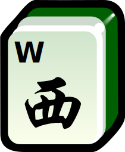
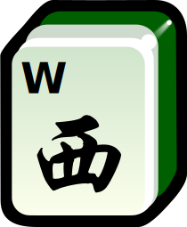

A Concise Mahjong Reference Sheet
The Tiles
Circles
(Dots)


Bamboos
(Sticks)


Characters
(Cracks)


Winds
 

Dragons


There are four identical copies of each of these tiles.
Note that 1 Bamboo is a bird, not a stick of bamboo, and the White Dragon is a blank tile with a black-and-white border, not a dragon.
Bonus Tiles: Flowers


Whenever you draw a flower, set it aside and draw a replacement.
Your Hand
Pong
(3x)
Chow
(3-run)
Kong
(4x)
Pair
(2x)
An Pair is a set of any two of the same tile, a Pong is a set of any three of the same tile, and a Kong is the set of all four copies of the same tile.
A Chow is a run of any three numbered tiles (i.e. Dots, Bamboos, or Characters).
Mahjong (Winning Hand)
A winning hand is made up of fourfiveFiveFour, when playing 16-Tile Mahjong. Pongs/Kongs/Chows and one Pair.
Special Mahjong: Seven Pairs
A rare alternative way to win is with a hand made up of seven PairsAnd one Pong/Kong/Chow, when playing 16-Tile Mahjong..
Gameplay
On each turn you draw discard then discarddrawDiscard Draw then drawdiscard, when playing 14-Tile Mahjong. a tile.
Remember that if the drawn tile is a flower, set it aside and draw again.
Stealing and Melding
If you can use a tile that was just discarded to complete a Pong, Kong, Chow, or Mahjong in your hand, you can choose to steal it by calling:
at any time
at any time
when you're up next
If multiple people want to steal the same tile, use the order above to determine who gets to steal. It does not matter who said what first.
+
— Meld —>
After you steal, you must meld (i.e. “lock in”) the Pong, Kong, or Chow you made by revealing these tiles to the table face-up.
Tiles in a meld can no longer be discarded, and must be part of your final Mahjong.
Finally, you must discard a tile to offset the one you stole. Play continues as if you had just finished your turn, skipping anyone in between you and whoever discarded.
Remember that you cannot steal to complete a Pair.
Special Rules for Melding Kongs
Even though a Kong is equivalent to a Pong or a Chow in terms of getting a Mahjong, it takes one more tile to form. Thus, for every Kong you want to use in a Mahjong, you will need an extra tile. This is the justification for these three rules:
1. Whenever you meld a Kong, you must immediately draw a tile.
— Concealed Meld —>
2. If it is your turn and you have a Kong in your hand that you have decided you want to use as part of your final Mahjong, you must meld it by calling “Kong!” and placing the tiles face-down. This is called a Concealed Kong. Remember to draw.
+
— Add to Meld —>
3. If it is your turn and you draw the fourth tile of one of your melded Pongs, you may add to your meld and turn it into a melded Kong. Remember to draw.
A rarely encountered edge-case to this final rule is that if another player adds to a melded Pong to form a melded Kong, but you can use that tile to complete a Mahjong, then you can rob their Kong (i.e. take the fourth tile) and win.
Remember that you cannot steal to turn a melded Pong into a melded Kong.
About
This reference sheet is based on the general rules of Mahjong as described by mahjongpictureguide.com and Wikipedia. The rule changes for 16-tile Mahjong are based on Taiwanese Mahjong and Filipino Mahjong.
Not included are the way tiles are set up and distributed at the beginning of the game, the way different rounds of the game are coordinated, and scoring – which varies tremendously between versions. Another common point of variation between versions is what a winning hand looks like – some versions add additional winning hands, and American Mahjong disallows the standard winning hands all together. Also notable is that Filipino Mahjong treats winds and dragons as flowers.
Tile graphics are based on the Wikimedia tileset created by Cangjie6.
{kind=link}